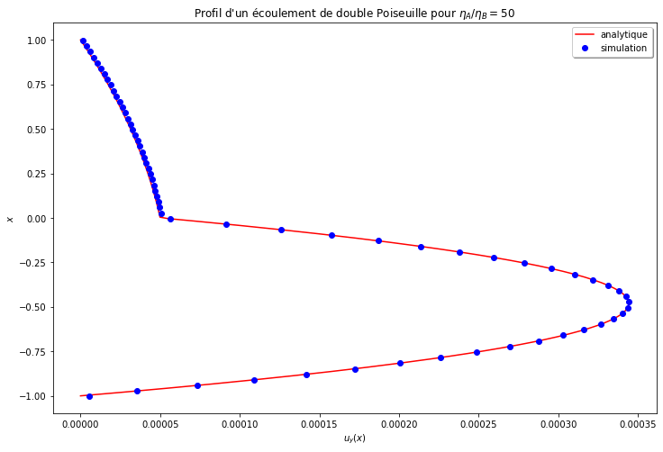
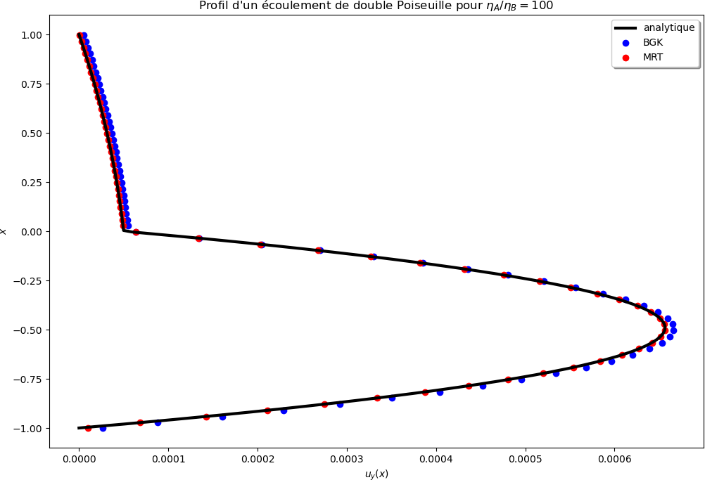
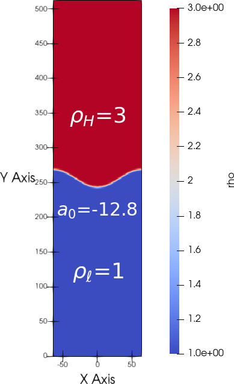
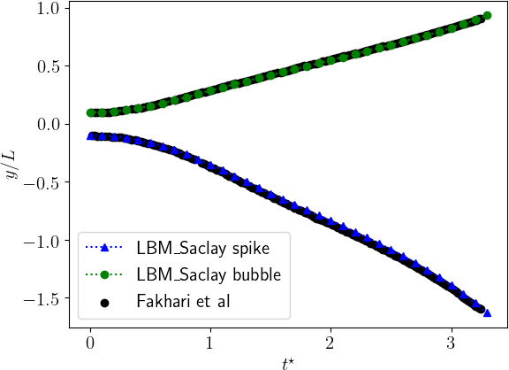
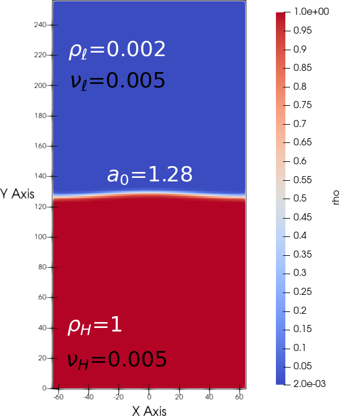
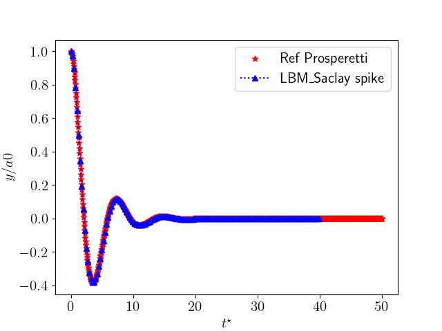
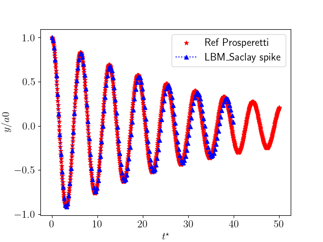
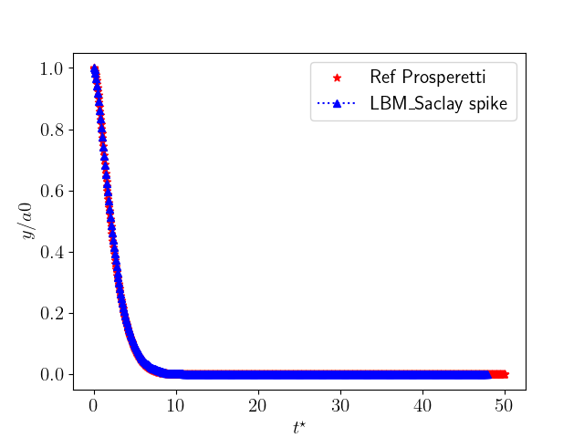
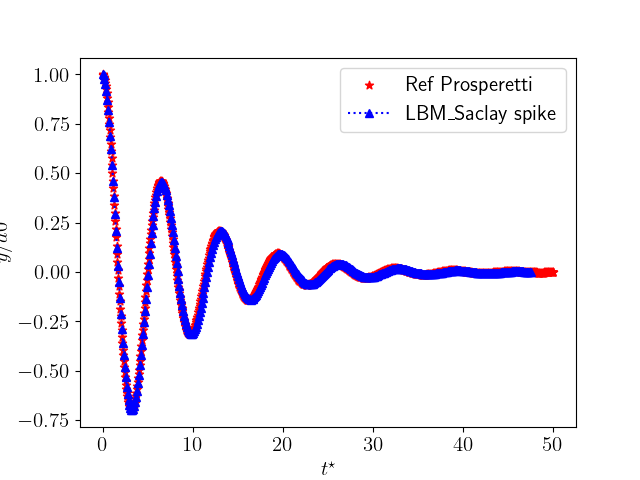

Run “Two-phase with fluid flows” PART A: Verifications
The first three test cases for two-phase with fluid flows compare the numerical solutions with classical solutions: the first one is the comparison with of double-Poiseuille analytical solution, the second one is the Rayleigh-Taylor instability and the last one is the comparison with analytical solution of Prosperetti.
Double-Poiseuille analytical solution
Double-Poiseuille: verification of viscosity ratio
Comparison of LBM_Saclay with the analytical solution of double-Poiseuille flows Eqs (703) with the coefficient \(G\) defined by Eq. (704) written in Analytical solution of double-Poiseuille flow.
For LBM training session
$ cd run_training_lbm/TestCase07_Double-Poiseuille
Run with BGK collision operator
$ ~/LBM_Saclay_Rech-Dev/build_openmp/src/LBM_saclay TestCase07_Double_Poiseuille_BGK.ini
The simulation ran 583.956 seconds on CPU of is154726 against 100.055 on partition gpuq_h100 of Orcus to achieve 300.001 time-steps.
Run with MRT collision operator
$ ~/LBM_Saclay_Rech-Dev/build_openmp/src/LBM_saclay TestCase07_Double_Poiseuille_MRT.ini
Once the simulation is complete, in paraview12:
For training session: commands in paraview
Open
double_poiseuille_100_FINAL.vtiand selectvyCtrl spaceandCell Data to Point DataandApplyCtrl space+Plot Over LineSelect
Sample At Segment CentersClic onX axisandApply–> new graph with profileFile–>Save Data,file name:Profil_Double-Poiseuille_BGK.csvandOK
Next in your terminal
For training session: python script
$ python Post-Pro_Double-Poiseuille_BGK.py
After running python script, you should obtain Fig. 15. If problem with plot, Check in file Profil_Double-Poiseuille_BGK.csv that the column numbers of "vy" and "Points:0" match with numbers set in file Post-Pro_Double-Poiseuille_BGK.py:
if row[0]!= 'laplaphi': x_list = np.append(x_list, float(row[31])) u_y = np.append(u_y, float(row[15]))
{kind=link}

Fig. 15 Validation with double-Poiseuille analytical solution.
{kind=link}

Fig. 16 Comparison between BGK and MRT collision for \(\eta_A/\eta_B=100\).
Rayleigh-Taylor instability
Rayleigh-Taylor instability: verification of small density ratio (\(\rho_H/\rho_{\ell}=3\))
The second validation is a comparison with the Rayleigh-Taylor instability of the literature. For that test case, several dimensionless numbers are commonly used. First, the characteristic velocity is defined by \(U_c\) where \(g\) is the gravity and \(L\) is the domain width. Once that characteristic velocity is defined, it is used in dimensionless numbers of fluid flows such as Reynolds and capillary numbers. The Atwood number is also used in simulations and Peclet number for phase-field equation.
Characteristic velocity
Reynolds number
Atwood number
Capilary number
Peclet number
Input parameters inside the .ini file of LBM_Saclay correspond to those calculated in the python script Pre-Pro_InputParam_Rayleigh-Taylor.py.
For LBM training session: run
$ cd run_training_lbm/TestCase08_Rayleigh-Taylor2D
Run with BGK collision operator
$ ~/LBM_Saclay_Rech-Dev/build_openmp/src/LBM_saclay TestCase08_Rayleigh-Taylor_Spike-Bubble.ini
The simulation ran 587.993 seconds on CPU of is154726 against 28.233 seconds on gpuq_h100 on Orcus to achieve 52.000 time-steps.
Table 3 Benchmark (performed September 3rd, 2025) Computer
Architecture
Model
Time of simulation
is247529
CPU
13th Gen Intel(R) Core(TM) i9-13900K
142.333 s
manwe
CPU
Intel(R) Xeon(R) Gold 6230R CPU @ 2.10GHz
140.626 s
manwe
GPU
RTX A6000
66.424 s
Orcus
GPU
A100
32.744 s
Orcus
GPU
H100
28.233 s
For training session: commands in paraview
Open all
.vtifiles and selectphiCtrl spaceandCell Data to Point DataandApplyClic on
contourand select fieldphiwith value0.5andApplyFile–>Save Data, choose.cvsformat and create a new folderContours. Select it and write the file name:dataClic on
Write Time StepsandWrite Time Steps SeparatelyandOK
For every time-step, the value of phase-field \(\phi=0.5\) will be written in an output file data_I where I is an integer.
Next in your terminal
For training session: python script
Both files RT2D_Bubble_Ref_Fakhari_PRE2017.dat & RT2D_Spike_Ref_Fakhari_PRE2017.dat contain \(t^{\star}\) and \(y\) positions of bubble point (1st file) and spike (2nd file). They have been digitalized from Fig 6 of reference [1]. All files data.csv must be set in a new folder Contours:
$ python Post-Pro_Rayleigh-Taylor2D_CompareFakhari.py
After running the python script you should find Fig. 18.
Results
The initial condition is presented on Fig. 17 and the evolution of bubble (green dots) and spikes (blue triangles) is presented on Fig. 18. The benchmark is performed with black dots from reference.
{kind=link}

Fig. 17 Initial condition for Rayleigh-Taylor test case
{kind=link}

Fig. 18 Evolution of spike and bubble point. Benchmark with literature.
Exercise
In LBM_Saclay input file, modify \(\nu^{\star}\), and \(M_{\phi}\) such as Re=1000 and Pe=100. We will simulate two cases. The first one with a surface tension \(\sigma^{\star}\) set such as Ca=0.01 and the second one such as Ca=0.1. Run both simulations, make the video and discuss consistency of results with the capillary length \(l_c\).
Method:
use the pre-processing python script to set the parameters
$ python InputParam_Exercise.py
Set the parameters in LBM_Saclay input file and run the simulation
Once the simulations is performed, use
pvpythoncommand (paraview python) withRayleigh-Taylor-Make-Video.pvpy(which uses the pvstate fileState_Vid_Rayleigh-Taylor2D_PV513.pvsm) to make the video.
$ /tmp_formation/LBM_Saclay/ParaView/ParaView-5.13.0-MPI-Linux-Python3.10-x86_64/bin/pvpython Rayleigh-Taylor-Make-Video.pvpy
Capillary wave: analytical solution of Prosperetti
Capillary wave: verification of high density ratio (\(\rho_H/\rho_{\ell}=500\))
The Capillary wave is a test case with an analytical solution of Prosperetti Analytical solution of Prosperetti for capillary wave.
For LBM training session: mesh 256x512
Run LBM_Saclay with one value specific value of kinematic viscosity \(\nu\):
$ cd run_training_lbm/TestCase09_Capillary-Wave2D/Mesh_256x512_nu0 $ ~/LBM_Saclay_Rech-Dev/build_openmp/src/LBM_saclay TestCase09_Capillary-Wave_Prosperetti_Cas1_nu0.ini
The simulation ran 46 min on GPU A6000 of MANWE to achieve 1.600.001 time-steps. The same simulation ran 797.855 seconds (~ 13min18s) on partition gpuq_h100 of Orcus.
For comparison with analytical solution in paraview12:
For training session: commands in paraview
Open all
.vtifiles and selectphiCtrl spaceandCell Data to Point DataandApplyClic on
contourand select fieldphiwith value0.5andApplyFile–>Save Data,file name:dataClic on
Write Time StepsandWrite Time Steps SeparatelyandOK
For every time-step, the value of phase-field \(\phi=0.5\) will be written in an output file data_I where I is an integer.
A python script implements the Prosperreti’s analytical solution and plots that solution with LBM_Saclay results post-processed with paraview. To run that script:
For training session: python script
File Solution-Prosperetti.dat contains \(t^{\star}\) and \(y\) computed by the analytical solution of Prosperetti. That solution was obtained for the following input parameters set inside each python script
$ python Post-Pro_Capillary-Wave_CompareProsperetti_Cas1_nu0.py
Running python script should plot Fig. 20.
{kind=link}

Fig. 19 Initial condition for capillary wave.
Results
Mesh 256x512
{kind=link}

Fig. 20 Validation for \(\nu_0\) on mesh size 256x512.
{kind=link}

Fig. 21 Validation for \(\nu_1\) on mesh size 256x512.
Mesh 400x800
{kind=link}

Fig. 22 Validation for \(\nu_0\) on mesh size 400x800.
{kind=link}

Fig. 23 Validation for \(\nu_1\) on mesh size 400x800.
References
Section author: Alain Cartalade